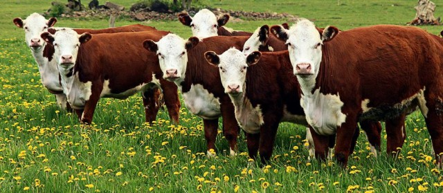

Livestock Monitoring
Ranchers can use wireless IoT applications to gather data regarding the health, well-being, and location of their cattle helps identify sick animals so they can be pulled from the herd, preventing the spread of disease. And also lowers labour costs because ranchers can identify where their cattle are located.